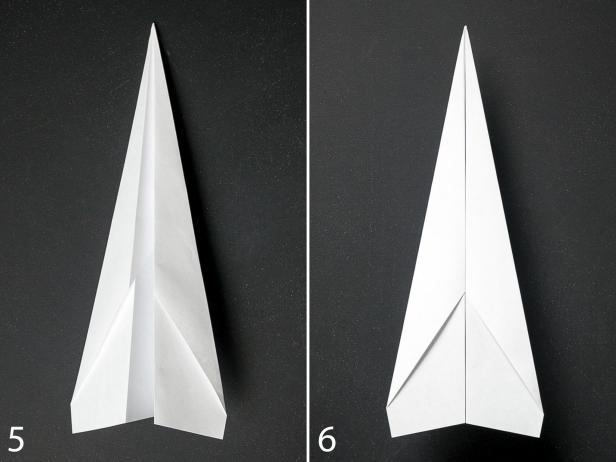
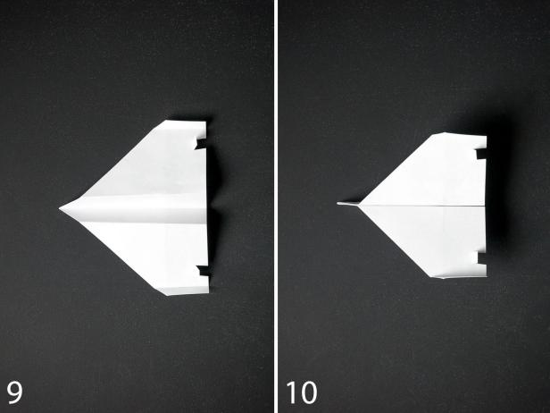
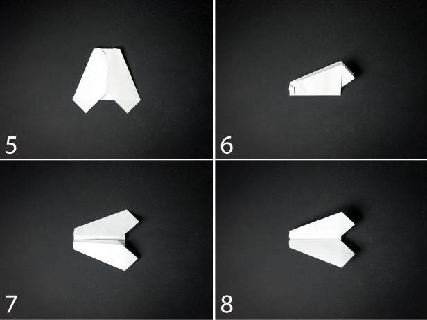

Boats!
Back
The Dart Plane
- Fold the paper in half vertically.
- Unfold the paper and fold each of the top corners into the center line.
- Fold the top edges into the center line.
- Fold the plane in half toward you.
- Fold the wings down, matching the top edges up with the bottom edge of the body.
- Add double stick tape to the inside of the body. The finished plane should look like this.

The Steath
- Fold the paper in half vertically.
- Unfold the paper and fold each of the top corners into the center line.
-
Fold the peak toward you and 3/4” from the bottom of the paper.
-
Fold both top corners into the center line.
-
Fold the remaining tip over the two flaps at the center line to lock them in place.
-
Fold the plane in half away from you.
-
Fold the wings down 1” from the bottom of the plane.
-
Fold up the sides of each wing 1/2” tall.
-
Cut two small slits at the back of each wing. Fold up the tabs.
-
Add double stick tape to the inside of the body. The finished plane should look like this.

The Bumble
- Fold the paper in half horizontally.
-
Unfold the paper and fold each of the top corners into the center line.
-
Fold the peak down to meet the edge of the previous fold.
-
Fold the upper sides into the center line.
-
Fold the top edge 1/2” away from you.
-
Fold the plane in half towards you.
-
Fold the wings down 1/2” from the bottom of the plane.
-
Add double stick tape to the inside of the body. The finished plane should look like this.
